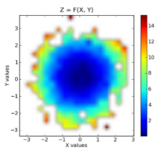
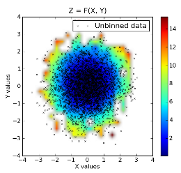

A commonly asked question on the matplotlib mailing lists is “how do I make a contour plot of my irregularly spaced data?”. The answer is, first you interpolate it to a regular grid. As of version 0.98.3, matplotlib provides a griddata function that behaves similarly to the matlab version. It performs “natural neighbor interpolation” of irregularly spaced data a regular grid, which you can then plot with contour, imshow or pcolor.
This requires Scipy 0.9:
import numpy as np
from scipy.interpolate import griddata
import matplotlib.pyplot as plt
import numpy.ma as ma
from numpy.random import uniform, seed
# make up some randomly distributed data
seed(1234)
npts = 200
x = uniform(-2,2,npts)
y = uniform(-2,2,npts)
z = x*np.exp(-x**2-y**2)
# define grid.
xi = np.linspace(-2.1,2.1,100)
yi = np.linspace(-2.1,2.1,100)
# grid the data.
zi = griddata((x, y), z, (xi[None,:], yi[:,None]), method='cubic')
# contour the gridded data, plotting dots at the randomly spaced data points.
CS = plt.contour(xi,yi,zi,15,linewidths=0.5,colors='k')
CS = plt.contourf(xi,yi,zi,15,cmap=plt.cm.jet)
plt.colorbar() # draw colorbar
# plot data points.
plt.scatter(x,y,marker='o',c='b',s=5)
plt.xlim(-2,2)
plt.ylim(-2,2)
plt.title('griddata test (%d points)' % npts)
plt.show()
import numpy as np
from matplotlib.mlab import griddata
import matplotlib.pyplot as plt
import numpy.ma as ma
from numpy.random import uniform
# make up some randomly distributed data
npts = 200
x = uniform(-2,2,npts)
y = uniform(-2,2,npts)
z = x*np.exp(-x**2-y**2)
# define grid.
xi = np.linspace(-2.1,2.1,100)
yi = np.linspace(-2.1,2.1,100)
# grid the data.
zi = griddata(x,y,z,xi,yi)
# contour the gridded data, plotting dots at the randomly spaced data points.
CS = plt.contour(xi,yi,zi,15,linewidths=0.5,colors='k')
CS = plt.contourf(xi,yi,zi,15,cmap=plt.cm.jet)
plt.colorbar() # draw colorbar
# plot data points.
plt.scatter(x,y,marker='o',c='b',s=5)
plt.xlim(-2,2)
plt.ylim(-2,2)
plt.title('griddata test (%d points)' % npts)
plt.show()
By default, griddata uses the scikits delaunay package (included in matplotlib) to do the natural neighbor interpolation. Unfortunately, the delaunay package is known to fail for some nearly pathological cases. If you run into one of those cases, you can install the matplotlib natgrid toolkit. Once that is installed, the griddata function will use it instead of delaunay to do the interpolation. The natgrid algorithm is a bit more robust, but cannot be included in matplotlib proper because of licensing issues.
The radial basis function module in the scipy sandbox can also be used to interpolate/smooth scattered data in n dimensions. See [“Cookbook/RadialBasisFunctions”] for details.
A less robust but perhaps more intuitive method is presented in the code below. This function takes three 1D arrays, namely two independent data arrays and one dependent data array and bins them into a 2D grid. On top of that, the code also returns two other grids, one where each binned value represents the number of points in that bin and another in which each bin contains the indices of the original dependent array which are contained in that bin. These can be further used for interpolation between bins if necessary.
The is essentially an Occam’s Razor approach to the matplotlib.mlab griddata function, as both produce similar results.
# griddata.py - 2010-07-11 ccampo
import numpy as np
def griddata(x, y, z, binsize=0.01, retbin=True, retloc=True):
"""
Place unevenly spaced 2D data on a grid by 2D binning (nearest
neighbor interpolation).
Parameters
----------
x : ndarray (1D)
The idependent data x-axis of the grid.
y : ndarray (1D)
The idependent data y-axis of the grid.
z : ndarray (1D)
The dependent data in the form z = f(x,y).
binsize : scalar, optional
The full width and height of each bin on the grid. If each
bin is a cube, then this is the x and y dimension. This is
the step in both directions, x and y. Defaults to 0.01.
retbin : boolean, optional
Function returns `bins` variable (see below for description)
if set to True. Defaults to True.
retloc : boolean, optional
Function returns `wherebins` variable (see below for description)
if set to True. Defaults to True.
Returns
-------
grid : ndarray (2D)
The evenly gridded data. The value of each cell is the median
value of the contents of the bin.
bins : ndarray (2D)
A grid the same shape as `grid`, except the value of each cell
is the number of points in that bin. Returns only if
`retbin` is set to True.
wherebin : list (2D)
A 2D list the same shape as `grid` and `bins` where each cell
contains the indicies of `z` which contain the values stored
in the particular bin.
Revisions
---------
2010-07-11 ccampo Initial version
"""
# get extrema values.
xmin, xmax = x.min(), x.max()
ymin, ymax = y.min(), y.max()
# make coordinate arrays.
xi = np.arange(xmin, xmax+binsize, binsize)
yi = np.arange(ymin, ymax+binsize, binsize)
xi, yi = np.meshgrid(xi,yi)
# make the grid.
grid = np.zeros(xi.shape, dtype=x.dtype)
nrow, ncol = grid.shape
if retbin: bins = np.copy(grid)
# create list in same shape as grid to store indices
if retloc:
wherebin = np.copy(grid)
wherebin = wherebin.tolist()
# fill in the grid.
for row in range(nrow):
for col in range(ncol):
xc = xi[row, col] # x coordinate.
yc = yi[row, col] # y coordinate.
# find the position that xc and yc correspond to.
posx = np.abs(x - xc)
posy = np.abs(y - yc)
ibin = np.logical_and(posx < binsize/2., posy < binsize/2.)
ind = np.where(ibin == True)[0]
# fill the bin.
bin = z[ibin]
if retloc: wherebin[row][col] = ind
if retbin: bins[row, col] = bin.size
if bin.size != 0:
binval = np.median(bin)
grid[row, col] = binval
else:
grid[row, col] = np.nan # fill empty bins with nans.
# return the grid
if retbin:
if retloc:
return grid, bins, wherebin
else:
return grid, bins
else:
if retloc:
return grid, wherebin
else:
return grid
The following example demonstrates a usage of this method.
import numpy as np
import matplotlib.pyplot as plt
import griddata
npr = np.random
npts = 3000. # the total number of data points.
x = npr.normal(size=npts) # create some normally distributed dependen
t data in x.
y = npr.normal(size=npts) # ... do the same for y.
zorig = x**2 + y**2 # z is a function of the form z = f(x,
y).
noise = npr.normal(scale=1.0, size=npts) # add a good amount of noise
z = zorig + noise # z = f(x, y) = x**2 + y**2
# plot some profiles / cross-sections for some visualization. our
# function is a symmetric, upward opening paraboloid z = x**2 + y**2.
# We expect it to be symmetric about and and y, attain a minimum on
# the origin and display minor Gaussian noise.
plt.ion() # pyplot interactive mode on
# x vs z cross-section. notice the noise.
plt.plot(x, z, '.')
plt.title('X vs Z=F(X,Y=constant)')
plt.xlabel('X')
plt.ylabel('Z')
# y vs z cross-section. notice the noise.
plt.plot(y, z, '.')
plt.title('Y vs Z=F(Y,X=constant)')
plt.xlabel('Y')
plt.ylabel('Z')
# now show the dependent data (x vs y). we could represent the z data
# as a third axis by either a 3d plot or contour plot, but we need to
# grid it first....
plt.plot(x, y, '.')
plt.title('X vs Y')
plt.xlabel('X')
plt.ylabel('Y')
# enter the gridding. imagine drawing a symmetrical grid over the
# plot above. the binsize is the width and height of one of the grid
# cells, or bins in units of x and y.
binsize = 0.3
grid, bins, binloc = griddata.griddata(x, y, z, binsize=binsize) # see this rou
tine's docstring
# minimum values for colorbar. filter our nans which are in the grid
zmin = grid[np.where(np.isnan(grid) == False)].min()
zmax = grid[np.where(np.isnan(grid) == False)].max()
# colorbar stuff
palette = plt.matplotlib.colors.LinearSegmentedColormap('jet3',plt.cm.datad['jet
'],2048)
palette.set_under(alpha=0.0)
# plot the results. first plot is x, y vs z, where z is a filled level plot.
extent = (x.min(), x.max(), y.min(), y.max()) # extent of the plot
plt.subplot(1, 2, 1)
plt.imshow(grid, extent=extent, cmap=palette, origin='lower', vmin=zmin, vmax=zm
ax, aspect='auto', interpolation='bilinear')
plt.xlabel('X values')
plt.ylabel('Y values')
plt.title('Z = F(X, Y)')
plt.colorbar()
# now show the number of points in each bin. since the independent data are
# Gaussian distributed, we expect a 2D Gaussian.
plt.subplot(1, 2, 2)
plt.imshow(bins, extent=extent, cmap=palette, origin='lower', vmin=0, vmax=bins.
max(), aspect='auto', interpolation='bilinear')
plt.xlabel('X values')
plt.ylabel('Y values')
plt.title('X, Y vs The No. of Pts Per Bin')
plt.colorbar()
The
binned
data:
Raw
data
superimposed
on
top
of
binned
data:
CategoryCookbookMatplotlib